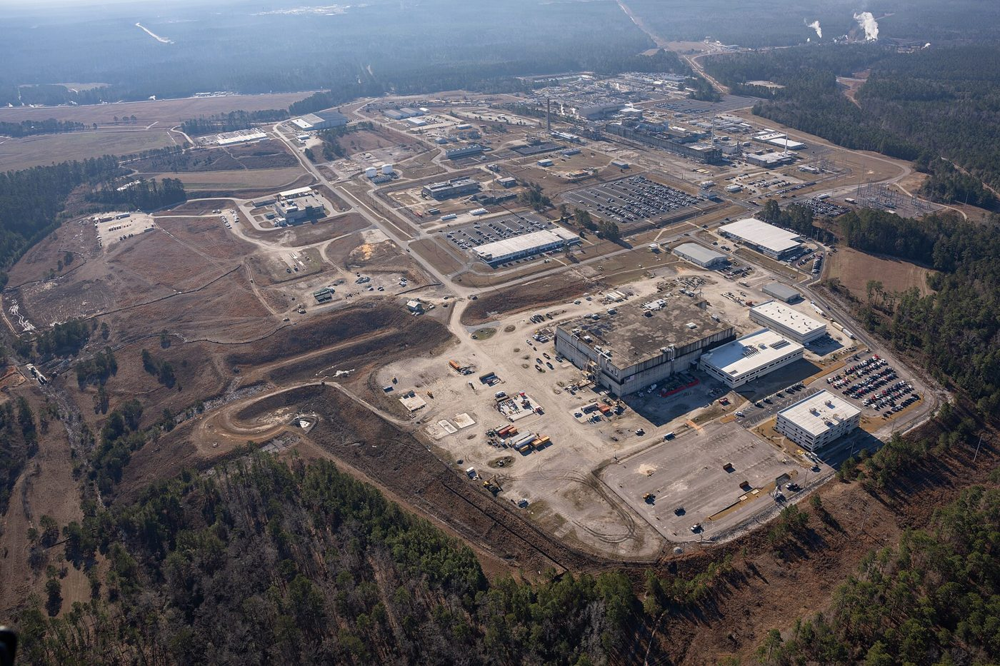

Part 1 of 8 in Chapter 4
Making Pits Again
The site's weapons work is growing again. DOE (Department of Energy) decided in November 2020 to make pits, the radioactive plutonium cores of nuclear weapons, at Savannah River (WB: Federal Register), and SRS (Savannah River Site) Watch and others are challenging the decision in federal court (DL). The plant is being built by repurposing an unfinished concrete structure on the site, and in 2024 its builders were still promising it by 2032 (WB: SRS).

.jpg){kind=link}
In 2022 NNSA (National Nuclear Security Administration) told Congress the site would not reach 50 pits a year until sometime between 2032 and 2035, not the 2030 target (IA: Congressional Research Service). In January 2023 GAO (Government Accountability Office) found that NNSA had no complete schedule or full cost estimate for pit production, and counted at least $18 billion to $24 billion in potential costs across its two pit sites (WB: GAO).
By February 2026 GAO reported the main building's possible cost at over $22 billion, up from a preliminary $6.9 billion to $11.1 billion, with completion in September 2035 at the earliest (WB: GAO 2026). NNSA's own review of 2025 said its contractor had "underperformed" on the project and been "negligent in reporting project slips" (WB: NNSA). On October 15, 2026, DOE approved the plant's baseline and authorized full construction (WB: NNSA).
Safety for the workers inside is a live question. In August 2023 the Defense Nuclear Facilities Safety Board warned that the planned controls "may not adequately protect facility workers" handling plutonium in glove boxes (WB: safety board). In May 2025 the board said NNSA's upgrades were "a significant improvement to safety" and resolved its concerns (WB: safety board).
Follow this thread, plutonium after the cold war. Earlier: Chapter 3, Plutonium: MOX and Pits. Continues in Chapter 4, Moving Plutonium Out.